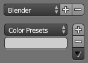

List Views & Presets¶
List Views¶

This control is useful to manage lists of items. They can be found in example in the object data properties.
- Select
- To select an item,
LMBon it. - Rename
- By double clicking on an item, you can edit its name via a text field.
This can also be achieved by pressing
Ctrl-LMBover it. - Resize
- The list view can be resized to show more or fewer items. Hover the mouse over the handle (==) then click and drag the handle to expand or shrink the list.
- Filter
Click the Show filtering options button (+) to toggle filter option buttons.
- Search
- Type part of a list item’s name in the filter text field to filter items by part of their name.
- Filter Include
- When the magnifying glass icon has a
+sign then only items that match the text will be displayed. - Filter Exclude
- When the magnifying glass icon has a
-sign then only items that do not match text will be displayed. - Sort
Sort list items.
- Alphabetical
- This button switches between alphabetical and non-alphabetical ordering.
- Inverse
- Sort objects in ascending or descending order. This also applies to alphabetical sorting, if selected.
One the right of the list view are additional buttons:
- Add
+ - Adds a new item.
- Remove
- - To remove the selected item.
- Specials
- The down arrow on dark background opens a pop-up menu with operators context-sensitive to the item type. i.e. copy paste, or operations on all items.
- Move Up
- The button showing an up arrow moves the selected item up one position.
- Move Down
- The down arrow moves the item down.
Presets¶

Presets without and with specials.
- Selector
- A list of available presets. A selection will overrides the included properties.
- Add
+ - New presets can be added based on the in the preset included properties, which will be saved for later re-use. A pop-up opens where you can set a name after which you can select it from the list and in some cases additional settings.
- Remove
- - Deletes the selected preset.
- Specials
- The down arrow on dark background opens a pop-up menu with operators context-sensitive to the preset type. i.e. copy paste.